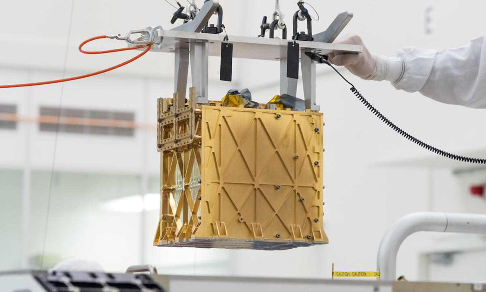
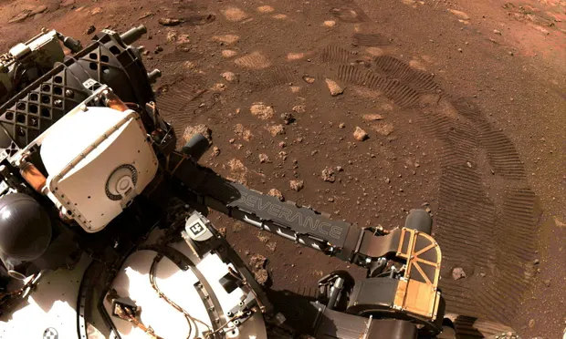

O Rover Perseverense da Agência Espacial Norte Americana(NASA), consegue produzi oxigênio em marte por meio de um aparelho conhecido como "MOXIE" (Mars Oxygen ISRU Experiment). A NASA descorbiu que pode transformar o dioxido de carbno (CO2), em (oxigênio O2), separando o monoxido de carbono do monoxido de oxigênio, algo impressionante e inédito pois é a primeira vez que é produzido oxigênio diretamente de um outro planeta, podendo ajudar bastante para a futura exploração . 
Moxie sendo instalado
o Moxie foi a bordo do Rover Perseverence da NASA que pousou ja superfice marciana no ano de 2020, além de vários outros intrumentos geológicos para a pesquisa da superfice terrestre foi levado o Moxie, que consiste em uma pequena caixa com vários intrumentos revertida por matériais resistente ao calor como níqueo, pois para ocorrer essa separação de moléculas o moxie atinge uma temperatura de 800 graus ceusios. Para que não se danifique o equipamento é revestido também com ouro e outros matériais que foram impressos por meio de uma impressora 3D.
.webp)
Interior do Moxie
O aparelho produziu 5g de oxigênio, sendo suficiente para que um ser humano respire 10 minutos em marte. Foi nessesário que o Moxie se aquecesse por 2 horas e gerando oxigênio com uma taxa de 6g/h. Podendo produzir cerca de 10g/h de oxigênio a atmosfera marciana
Rover Perseverence em marte